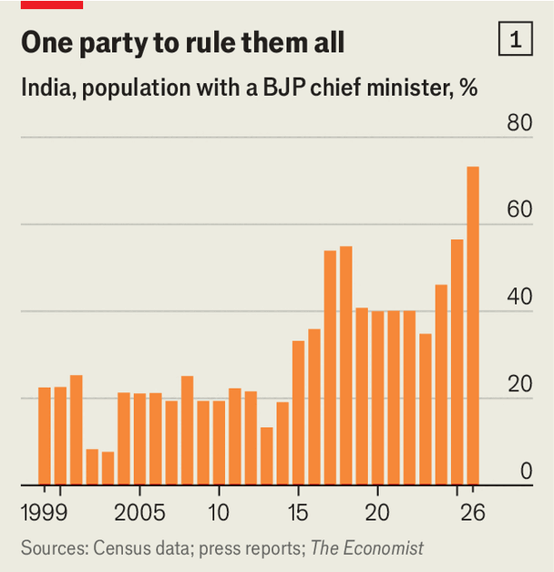
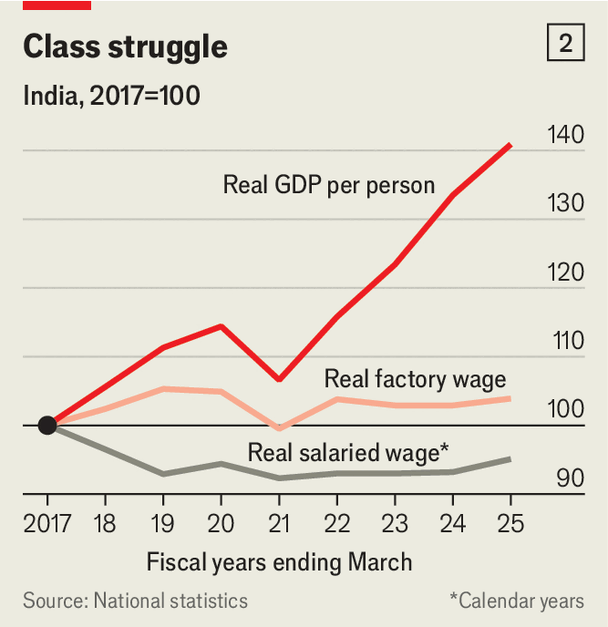
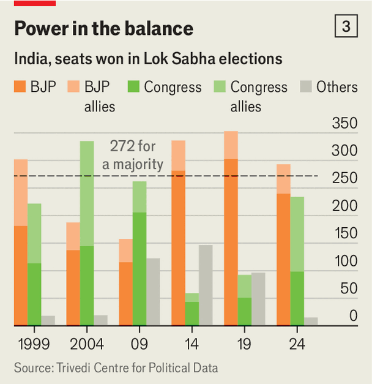

今年10月初，印度内阁发布了一份11页的颂词，纪念他们的领导人从政四分之一个世纪。从西部富裕的古吉拉特邦首席部长到总理，纳伦德拉·莫迪（Narendra Modi）改变了“每一个公民的生活”，赢得了“毫不动摇的支持”。他的奉献与诚实展现了“印度民主的力量”。
为庆祝莫迪的银禧，官方安排了一整月的活动：展览、植树、基层集会。事情并没有完全按计划走。
整个10月，印度被抗议笼罩：一起考试泄题引发的骚乱，演变成一场更广泛的反莫迪运动。Z世代活动人士、学生团体和反对党指责莫迪及其执政的印度人民党（bjp）操纵选举，并要求教育改革和就业机会。
这位76岁的强人似乎不知如何应对。他时而试图安抚活动人士，尤其是在7月让教育部长当了替罪羊；现在则转向镇压。在德里，当局切断移动互联网、取消列车、封锁道路，警察拘押了数千名抗议者，用棍棒殴打他们。这一切都被直播到全世界。
莫迪仍有坚实的支持，尤其是在年长选民中。他的意识形态依然有力。反对党虽然比过去团结，却缺乏组织力量，也还没提出一套自洽的替代方案。但街头的动荡确实是对莫迪统治的严峻挑战——既挑战那套已无法满足许多印度人期望的治理模式，也挑战那种堵死其他反对渠道的强硬手段。
因此，现在是回顾莫迪执政二十五年的好时机。在他治下，印度变成了什么样的国家？他的履历又预示着他接下来会怎么做？
莫迪登上政治舞台，是由一场地震带来的。2001年1月，地震撕裂了他家乡古吉拉特邦的卡奇地区，两万多人死亡。人民党当时那位力不从心的首席部长应对失措。党随即派出一名可靠的机关干部——一个留着胡子、戴着眼镜的51岁男人，此前从未参加过公职竞选，更谈不上拥有群众基础。很少有人看好他能撑多久。
他差点就没撑住。第二年，古吉拉特发生了可怕的宗教暴力。一群印度教朝圣者在火车上被烧死后，私刑暴徒上街肆虐，1000多人丧生，其中多数是穆斯林。莫迪从未为任内的流血承担责任或道歉，反而在当年晚些时候的选举中用煽动教派对立的演讲加剧了紧张。人民党大胜。此后他连赢五场选举，两场在古吉拉特，三场在全国。
一位早期的心腹把莫迪的崛起归功于他多年在印度教志愿团（rss）走村串户的历练。“他的优势一直是对普通印度人心理的把握，他们的希望与恐惧，”此人说。浸淫于印度教复兴主义意识形态的莫迪，尤其能体察许多印度教徒的受害感——他们认为过去的政策不公正地偏袒了穆斯林。
在古吉拉特，他确立了一套治理模式。他把自己包装成印度教强硬派加“发展能手”，大力招揽外资，与工业家建立紧密关系，给企业送土地、税收优惠和补贴。他把警察、法院和党的干部牢牢抓在手里。同时，他一直塑造自己 独一无二地 清廉的形象：苦行、独身、没有家族要照顾。
当上总理后，莫迪把这套模式用到整个印度。这个14.5亿人口的国家，实际上由总理办公室和长期担任内政部长、兼莫迪的执行者与战略家的阿米特·沙阿（Amit Shah）身边几十个人统治。德里的许多人说，莫迪很少受到挑战，内阁部长们听命行事，人民党的首席部长们也一样。
此前印度只有过两位如此强势的领导人。第一位是贾瓦哈拉尔·尼赫鲁，他在17年总理任内把一个新独立的印度塑造成受社会主义经济思想启发的世俗民主国家。第二位是他的女儿英迪拉·甘地，她在16年任内把印度带向左转，常以民粹式威权方式统治。
出身贫寒的莫迪是照着这两位来定义自己的。他推行印度教民族主义、亲商改革与福利主义的混合体，把曾经强大的国大党削成一个空壳。但与甘地一样，他牢牢控制着自己的党、媒体和国家机构，并建立了个人崇拜。“连英迪拉都没有这种程度的控制力，”政治学者尼兰詹·西尔卡（Neelanjan Sircar）说。

chart: the economist
人民党这台庞大的政治机器在今年5月显露威力：该党拿下了东部人口大邦西孟加拉邦的首席部长马马塔·班纳吉（Mamata Banerjee）。如今超过70%的印度人生活在人民党执政的邦（见图1）。然而五个月后，莫迪正面临任内最艰难的考验。“人民党同时处于最强和最弱的位置，”金奈的希夫纳达尔大学拉胡尔·维尔马（Rahul Verma）说。它从未统治过这么多国土，也从未遭遇如此疲惫与公开的不满。
要看莫迪造出了什么样的国家，可以从三个方面看他的影响：经济、社会与民主。经济上他是现代化者，但不是许多人期待的改革者。2014年他接手时，全国数字身份与支付系统、以及用来替代17种邦级税的商品与服务税都已规划在案。此前长期执政的较弱势联合政府难以推动这类变革，莫迪用自上而下的权力强行推了过去，这是巨大的成就。
结果是印度被一个更强的内部市场缝合起来，几乎所有印度人都能在网上获取服务、完成支付。全国高速公路网比莫迪上台时长了60%，农村家庭日均供电从12.5小时升到22.6小时。选民获得了免费粮食、电力接入和液化气。直接现金转移减少了贪腐与贫困，在莫迪与穷人之间建立了直接联系。
与其说莫迪亲市场，不如说他亲企业，他把印度推向一种国家资本主义模式。从古吉拉特时期起，他的崛起就与高塔姆·阿达尼（Gautam Adani）绑在一起——后者建起横跨港口、机场、能源和防务的帝国。像阿达尼这样的巨头和莫迪一样，把难办的事办成了，也帮经济以每年约6%的速度增长（与莫迪上台前相近）。印度储备银行大体上控制住了通胀，避免了让前任总理们翻车的剧烈波动。莫迪在财政上也异常审慎。
但回报高度集中在顶端。巨头们的收益一如既往地好，阿达尼的财富从2014年的70亿美元涨到1000亿美元以上。农村工人没有跟上。他们的实际工资在2006至2014年间通常每年增长6%，此后只增长1%。受薪阶层更差：扣除通胀后，这个约占印度劳动力四分之一的群体，平均工资自2017年以来下降了5%（见图2）。

chart: the economist
莫迪的失误在于，当更深层的土地与农业改革引发大规模抗议时，他放弃了。讽刺的是，向那种不满让步，恰恰催生了今天的不满。尽管增长稳定，莫迪并未实现他想要（也是内阁所夸耀）的经济转型。农业劳动力占比顽固地停在五分之二，制造业占比只略有上升。印度虽然铺满了光鲜的公路，非正规劳动依然无处不在。高等教育大扩张没有带来相应的受薪岗位增长，压低了工资，也制造出一大批沮丧的年轻人。
“我们看到的是莫迪撞上了治理模式的天花板，”德里附近阿育王大学前副校长普拉塔普·巴努·梅赫塔（Pratap Bhanu Mehta）说。他能强推那些只需要行政权力的大变革，却在需要凝聚共识或系统性改革的领域失败了。
第二个方面是社会，变化更为剧烈。在莫迪治下，印度变得更张扬、更民族主义、更印度教化，直白地说，对国内2亿穆斯林（略少于人口的七分之一）而言是更令人畏惧的地方。这是他遗产中最具争议的部分，也是反对莫迪的力量最无效的地方。
最明显的变化是莫迪把宗教民族主义与政治熔为一体。作为总理，他经常参加仪式与法事——最重要的是在阿约提亚一座清真寺旧址上为罗摩神庙开光，实现了数十年的夙愿。人民党推动通过了公民身份法，并开始改写穆斯林家庭法。尽管宪法里仍留着“世俗”一词，莫迪已经损害了“印度是平等对待所有宗教的共和国”这一原则。
这种变化不太可能被逆转。“印度教特性（Hindutva）对中产阶级仍是强大的磁石，”电视主播兼政治评论员拉杰迪普·萨尔德赛（Rajdeep Sardesai）说。人民党的首席部长们效仿莫迪，并把他的意识形态推向新极端。反对派政客也加入“拜庙”和“柔性印度教特性”的行列。而处于抗议中心的青年运动“蟑螂人民党”（cjp），明显避开了宗教议题。
自他在古吉拉特任首席部长的第一个凶险年份起，莫迪就养成了一种对反穆斯林偏见与暴力的纵容文化。人民党政客把穆斯林叫作“渗透者”“侵占者”，并发出威胁。教派暴力从1980年代的峰值持续下降——那是一个常被血腥骚乱玷污的时期。但义警团体针对穆斯林的定向袭击在增加，而且往往不受惩罚。这将是莫迪遗产中最具破坏性的部分，同样也难以逆转。

chart: the economist
靠着现代化与宗教民族主义的混合，莫迪在整合印度教徒选票上异常成功。但如果选民开始为经济焦虑，这种整合还能持续多久？2024年全国大选中，对就业不满的选民背离人民党，迫使莫迪以联合政府形式执政（见图3）。负责国大党民调的议员普拉文·查克拉瓦蒂（Praveen Chakravarty）称，年龄现在是主要的选举分界线，30岁以下（占合格选民近30%）正转向反对莫迪。
街头抗议者的焦点是第三个方面：莫迪对选举与制度的管理。抗议者指责他通过一项名为“特别集中复核”（sir）的选民核查程序“偷走民主”，在这一程序下，超过1.3亿个名字被从选民名册草案中删除。10月14日，蟑螂人民党领导人阿比吉特·迪普克（Abhijeet Dipke）讽刺地把局面比作“紧急状态”——那是甘地取消选举、关押政敌、压制媒体的时期：“那就正式宣布紧急状态吧，”他说。
上一次全面修订选民名册是在二十多年前，所以确有必要。但这次的删除数量远高于以往，其中至少一部分可以用内部迁移增加或选民去世来解释。莫迪的辩护者称，1.3亿人中只有一小部分是合格选民。
问题在于执行方式：仓促、不透明，而且一如既往地集中化。数以百万计被错误删除的人没有得到适当的申诉机会，从而失去投票权（申诉完成后，绝大多数都成功了）。以往这类工作由邦和地方机构执行，这次却由德里中央直接用软件操作，谁被删除、为什么被删除，几乎无从查证。
在一些人看来，这证明莫迪是个潜在的独裁者，为了保住权力不惜破坏印度民主。这就过头了。sir 过程确实晦暗，但没有证据显示它扭转了选举结果。“莫迪靠偷票维持权力”的论点，忽略了反对党一直拿不出更有说服力的替代方案。
更准确的理解是，sir 是莫迪强硬手段的极端样本。他的政府扩大了对最高法院法官任命的控制，削弱了司法独立；通过收购和敌意调查，驯服了曾经敢斗的印度媒体；同样用国家机器把政敌缠进官司。总体而言，莫迪滥用权力的无情程度和持续时间，超过任何一位印度领导人（不过英迪拉·甘地确实中止过民主，21个月后她从悬崖边退回，举行选举并被选下台）。
然而，印度民主比许多人以为的更有韧性。这个国家辽阔、多元、喧闹；竞争性选举虽有缺陷，却已深入人心。sir 丑闻表明，印度人依然珍视自己的选票，媒体也仍有能力问责政府。舆论压力已迫使最高法院和印度选举委员会改善被剔除选民的申诉程序。
智库卡内基国际和平基金会的米兰·瓦伊什纳夫（Milan Vaishnav）说，这是其他民主国家的常见规律。“当你有了一位非常强势的领导人，他可以把制度掰弯来服从自己，”他说，“但当他的声望开始消退，制度往往会弹回来。”
莫迪从未遇到这么强的逆风。76岁的他——德里的许多人在私下说——已显出老态。但他不太可能退让或改变做法。相反，他会继续设法分化并削弱反对派。官员私下说，部长们被几个拿着智能手机的孩子夺走议程的方式吓到了。他们的目标是通过关押抗议领袖或把他们拖进法庭，阻止青年运动成势，同时把不满引导到反对党身上——那是他们更擅长对付的对手。
这些手段是否有效还不好说。到目前为止，抗议者把每一次镇压都变成了病毒视频。把蟑螂人民党——他们身裹印度国旗、大谈宪法权利——打成“反国家分子”的尝试已经失败。莫迪也无法像2021年撤销激怒农民的改革那样，轻易化解这场运动的锋芒；党内许多人认为再让步就是滑坡。但压制合法异见，同样会让压力积聚。
总理也许会设法把政治辩论转到自己更舒服的地带。他可以加大印度教民族主义言论的调门，或者突然抛出一项争议法案，比如涉及“选区重划”的议案——那是各邦之间如何分配议会席位的棘手问题。人民党会试图把英迪拉的孙子、国大党领袖、反对派联盟领导人拉胡尔·甘地（Rahul Gandhi）描绘成一个想搞“政权更迭”却赢不了选举的街头闹事者。
不满的根源——教育、就业、工资——会继续溃烂。但反对派必须证明自己有更好的答案。甘地说话的语气常常像是风向已经决定性地转了（而他本人连输三场选举）。“我们要把他们彻底打垮，”他在10月6日的一次集会上这样谈莫迪和沙阿。到目前为止，莫迪的支持率只是略有下滑。有些选民不喜欢人民党的威权作风，但也担心一个由国大党领导、在甘地手里左转的臃肿联盟会怎么治国。
下一个大考在明年春天：包括人民党执政的最大邦北方邦在内的几个邦将举行选举。北方邦的选情看起来会很胶着。如果人民党赢了，它会宣称莫迪的持久人气得到证实，反对派是输不起；如果输了，那就是莫迪号召力衰退最确凿的信号。
对莫迪而言，眼下的风险是相信他身边人说的话——抗议只是一小撮无政府主义者和反国家分子，不代表印度人真正的不满。对反对派而言，风险恰好相反：相信几个月的街头行动就意味着莫迪已进入不可逆的衰落。二十五年里，他一次又一次证明了自己的韧性。他不会不作挣扎就下场。■